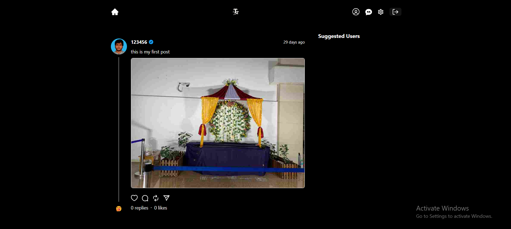
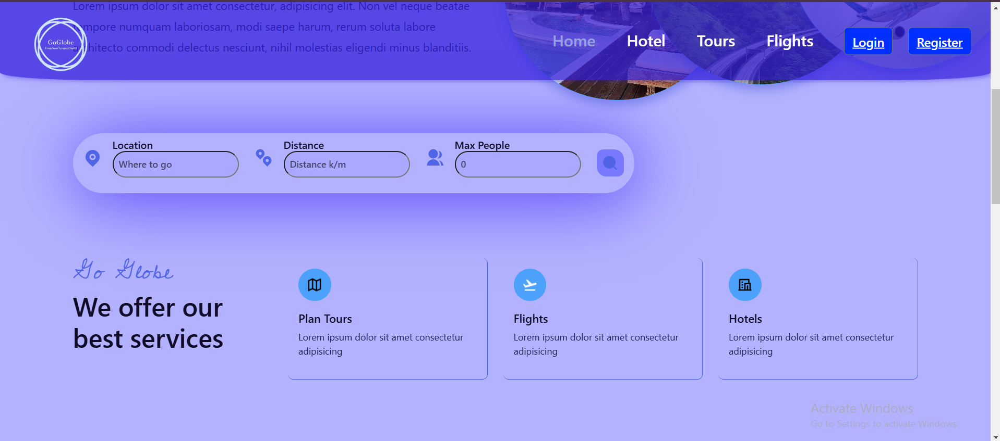

TalkTrend
Social media enthusiast turned developer, creating platforms that connect people seamlessly. Built TalkTrend , a dynamic social platform leveraging the MERN stack, along with features such as real-time messaging, post creation, likes, and comments.
This project emphasized my skills in MERN Stack development , Socket.IO integration , and crafting responsive designs. It demonstrates my ability to build scalable, interactive applications. Explore the code here.
GoGlobe
Passionate about revolutionizing travel experiences with technology. Developed GoGlobe , a tours and travel platform using the MERN stack, enabling users to explore destinations, book tours, and access personalized recommendations.
This project highlights my skills in full-stack development, API integrations , and creating user-centric designs. It reflects my commitment to enhancing user experiences through innovative solutions. Dive into the code here.
Amazon Clone

Aspiring web developer with a passion for building exceptional online experiences. Developed a Cloned Amazon Full Stack application using React and Firebase, replicating the functionality and user experience of the renowned e-commerce platform.
This project showcased a deep understanding of web development principles, strong problem-solving skills, and an ability to deliver high-quality applications. Through this experience, I honed my expertise in React and Firebase, solidifying my foundation in frontend and full-stack development.You can vist the code here.
WEATHER-SITE

As an aspiring web developer, I successfully designed and developed a weather website using HTML, CSS, and JavaScript. This project allowed me to gain hands-on experience in creating a user-friendly front-end interface. I also implemented an API integration to fetch weather data, enhancing the functionality of the website.
Through this project, I honed my skills in front-end technologies and expanded my knowledge of working with APIs. APIs was provide for trail for 7 days so it may have expired.
Cric-Play

As an enthusiastic developer, I designed and developed a cricket-playing app that stores data in JavaScript and incorporates functionalities such as search, delete, and add operations.
Through this project, I gained practical experience in JavaScript programming and learned how to manipulate and manage data within the app. By implementing search, delete, and add functions, I honed my skills in data handling and created an interactive user experience.